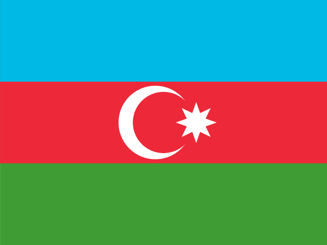
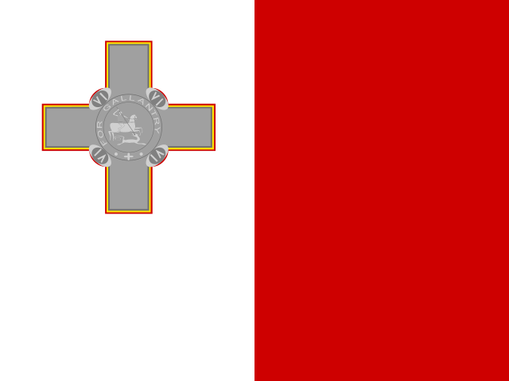
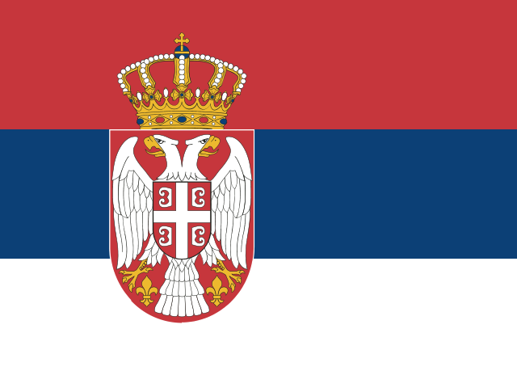

Uploaded on 2024 Jun. 8th
The yearly Eurovision contest is over, and with it the usual questions and statements have started appearing:
- Why didn't X song qualify to the grand final?
- X song should have won!
- The jury sucks!
- The people watching suck!
- This non-political show has political undertones!
I will to contribute to the general hubbub with a tier list and some commentary on each country's entry and what I thought of it. To be honest, it's a bit annoying that it's a contest, because there isn't one objective way to judge a song (or the song's live performance). To this end, I will instead sort the songs into categories from S (highest) to F (lowest) based on how much I liked them. For the record, I really wanted Estonia to win or at least get into the top 5.
Obligatory disclaimer: this is just my opinion - no matter what arguments or what kind of flowery language I may use, there's no claim to objectivity. This also applies to each tier's label - I don't mean to say that a song is "Exceptional", just that I like it exceptionally much. :)
The flag SVG images were taken from https://flagicons.lipis.dev
So first - the tier list! It's mostly based on their value as songs, though some bias may creep in due to other factors. Also, the Eurovision rules limit their potential quite a bit (that makes it all the more exciting when you find something really good though :D). They aren't in any particular order inside their tier.
Hover over (or tap on if you're on mobile) each country's flag if you forgot who represented said country and with what song. Below the ranking you can find hyperlinks that will scroll you to my thoughts on each country's entry.
| S - exceptional |
5MIINUST x Puuluup - (nendest) narkootikumidest ei tea me (küll) midagi 
Baby Lasagna - Rim Tim Tagi Dim 
LADANIVA - Jako 
Nemo - The Code 
Dons - Hollow 
Slimane - Mon amour |
| A - great |

Bambie Thug - Doomsday Blue 
Gåte - Ulveham 
Angelina Mango - La noia 
ISAAK - Always On The Run 
alyona alyona & Jerry Heil - Teresa & Maria |
| B - good |

Mustii - Before the Party's Over 
Marina Satti - ZARI 
Kaleen - We Will Rave 
Joost Klein - Europapa 
Raiven - Veronika 
Windows95man - No Rules!

FAHREE feat. Ilkin Dovlatov - Özünlə Apar 
Aiko - Pedestal 
Nebulossa - ZORRA 
MEGARA - 11:11 |
| C - average |

Eden Golan - Hurricane 
Silvester Belt - Luktelk 
LUNA - The Tower 
Marcus & Martinus - Unforgettable 
TALI - Fighter

Sarah Bonnici - Loop |
| D - could be better |

Olly Alexander - Dizzy 
Silia Kapsis - Liar

TEYA DORA - RAMONDA 
Electric Fields - One Milkali (One Blood) 
BESA - TITAN 
Natalia Barbu - In The Middle |
| E - meh |

Nutsa Buzaladze - Firefighter |
| F - bad or forgettable |

iolanda - Grito Hera Björk - Scared of Heights 
SABA - SAND |
Contents:
-
Albania: BESA - TITAN
-
Armenia: LADANIVA - Jako
-
Australia: Electric Fields - One Milkali (One Blood)
-
Austria: Kaleen - We Will Rave
- Azerbaijan: FAHREE feat. Ilkin Dovlatov - Özünlə Apar
-
Belgium: Mustii - Before the Party's Over
-
Croatia: Baby Lasagna - Rim Tim Tagi Dim
-
Cyprus: Silia Kapsis - Liar
-
Czechia: Aiko - Pedestal
-
Denmark: SABA - SAND
- Estonia: 5MIINUST x Puuluup - (nendest) narkootikumidest ei tea me (küll) midagi
-
Finland: Windows95man - No Rules!
-
France: Slimane - Mon amour
-
Georgia: Nutsa Buzaladze - Firefighter
-
Germany: ISAAK - Always On The Run
-
Greece: Marina Satti - ZARI
- Iceland: Hera Björk - Scared of Heights
-
Ireland: Bambie Thug - Doomsday Blue
-
Israel: Eden Golan - Hurricane
-
Italy: Angelina Mango - La noia
-
Latvia: Dons - Hollow
-
Lithuania: Silvester Belt - Luktelk
-
Luxembourg: TALI - Fighter
- Malta: Sarah Bonnici - Loop
-
Moldova: Natalia Barbu - In The Middle
-
Netherlands: Joost Klein - Europapa
-
Norway: Gåte - Ulveham
-
Poland: LUNA - The Tower
-
Portugal: iolanda - Grito
-
San Marino: MEGARA - 11:11
- Serbia: TEYA DORA - RAMONDA
-
Slovenia: Raiven - Veronika
-
Spain: Nebulossa - ZORRA
-
Sweden: Marcus & Martinus - Unforgettable
-
Switzerland: Nemo - The Code
-
Ukraine: alyona alyona & Jerry Heil - Teresa & Maria
-
United Kingdom: Olly Alexander - Dizzy
Albania
BESA - TITAN
D - could be better
I like the Semi-Final version more than the studio version, it just sounds like it has more feeling. Regardless of that though, there's only so much feeling you can put into a song that's so generic.
Armenia
LADANIVA - Jako
S - exceptional
Besides just liking the sound, I think I like it because it succeeds where other songs don't - it has great moments during the whole song, not just a nice but basic chorus with a greater hype moment at the end.
Australia
Electric Fields - One Milkali (One Blood)
D - could be better
I just don't like it, plain and simple. It's not bad per se, but I can't vibe with the voice or the melody at all.
Austria
Kaleen - We Will Rave
B - good
The general feeling reminds me a bit of Scooter, so I guess they did indeed rave.
Azerbaijan
FAHREE feat. Ilkin Dovlatov - Özünlə Apar
B - good
I would've liked it more if it had more lyrics in their native language, but it's still pretty nice. Normally this song would be in C Tier because it isn't anything spectacular in and of itself, but I think this band and singer pull it off very well and elevate it beyond the mediocrity that it would otherwise be.
Belgium
Mustii - Before the Party's Over
B - good
The only reason this makes it into B Tier is because of the last minute. Otherwise, the vocals, the melody, the chorus are all...nice, and that's it. I think this (along with Greece's song) are the most egregious examples of songs that left the best for last, but the best parts were too short.
Croatia
Baby Lasagna - Rim Tim Tagi Dim
S - exceptional
When I was watching the Official Videos for the entries earlier this year, this was one of the few that I liked, though I didn't think it would win (because most of the songs seemed so mediocre that I had no idea who would win). "Top 10, pretty nice", I thought. But the live versions are just so much better than the studio version, it's almost (but not quite) a day and night difference.
The difference in jury points between this and the winner isn't as big as last year, but it's still annoying, especially because I thought the song's subject was just as good as the subject of Nemo's "The Code". One is about leaving the familiar behind and becoming an adult in a strange new world, all alone. The other one is about becoming completely comfortable with who you are, whatever that might be.
Cyprus
Silia Kapsis - Liar
D - could be better
I will admit that I might unfairly (and vehemently) dislike this one. Besides the fact that it sounds generic (dance-pop wow no one else has thought of that whoaaa), it does one of the few things that I hate in songs - it calls out the listener.
I haven't paid much attention to the lyrics so I searched for them online andchecked out the song's Wikipedia page. Apparently it's a song criticising people who live fake lives on social media and shame others for not being as "perfect" as they are (paraphrased). This is fine, it's a good message. Unfortunately, since I can't really get in sync with the singer's emotion of righeous condemnation, listening to the song I'm left feeling condemned. I think the message comes across better in the Music Video, if you want to check that out.
Czechia
Aiko - Pedestal
B - good
I didn't really like it initially, but I warmed up to it. It sounds good, it doesn't overdo anything, and overall is pretty solid. I think the studio version is the definitive one, but the live version is fine too.
Denmark
SABA - SAND
F - bad or forgettable
I'm really not sure what could be done to improve this song - whenever I think about it it's just a scream of "SAND! SAAAAAAAAAND!!!!" and that's it. Maybe if the live performance had been more spectacular it could have elevated the song, but unfortunately that wasn't the case. The vocals are fine-ish, but otherwise it's kinda boring and empty. There's no intention behind all the cries of "SAND!".
Estonia
5MIINUST x Puuluup - (nendest) narkootikumidest ei tea me (küll) midagi
S - exceptional
This one was my favourite from the start. The studio version is the definitive one for sure (the live staging was a bit meh I think), but that shouldn't detract from just how good it sounds. It's a fun song, plain and simple, and it doesn't try to do anything else (also the title means "We (really) know nothing about (these) drugs", which just adds to the whole thing).
Finland
Windows95man - No Rules!
B - good
I don't really like the live version because there's too much going on, but the studio version is fine. Not my type of song, but fine.
France
Slimane - Mon amour
S - exceptional
I think these were the best vocals this year, but even if they weren't, that's why I like it. A bit of revenge for last year's awful (and unjust) placing.
Georgia
Nutsa Buzaladze - Firefighter
E - meh
It's kind of like "TITAN", but worse. Also, I'm getting really tired of "fire", "phoenix", and other related things. The live version has some nice staging, but I just don't like it.
Germany
ISAAK - Always On The Run
A - great
At first, I didn't think this was anything special. But I started liking it, so I think I just lumped in with other worse songs because I was tired of all the pop. Good instrumentals, good vocals, cool subject (I think? I paid more attention to the feeling than the words with this one).
Greece
Marina Satti - ZARI
B - good
I'm not quite sure, what this is about, but it sounds like a feel-good song. Its placing in B Tier would be a bit iffy if not for the last part of the song. Shame that it's so short.
Iceland
Hera Björk - Scared of Heights
F - bad or forgettable
I'm feeling a bit guilty over placing this song in F because the singer seems like a very kind lady. Unfortunately, the song itself is boring, even if its message is also nice.
Ireland
Bambie Thug - Doomsday Blue
A - great
I really wish that the live versions had less screaming, but the studio version is still there to listen to at least (I also wish there were more "Blue" parts). I think it would have qualified for the grand final even if the staging had been worse, but they pulled it off spectacularly.
Israel
Eden Golan - Hurricane
C - average
The vocals are good, the instrumentals are good, the problem I have is that the subject is very vague and generic, especially since almost all of the song is in english. Maybe if she sang in hebrew I'd rate it higher because I'm a sucker for artists singing in their native languages, but I just can't vibe with this song as it is.
Also, I don't want to comment on the current ongoing conflict but I am curious what they would have sent if things were different.
Italy
Angelina Mango - La noia
A - great
It sounds good, plain and simple, but I think what elevates it above other songs is that italian fits it really well. I have a feeling that it wouldn't have been this succesful in english.
Latvia
Dons - Hollow
S - exceptional
Honestly, if we went only by the studio version it would be in C or maybe B. But the live versions are really good, and I think it's a perfect contrast to Denmark's song because it contains so much feeling.
Lithuania
Silvester Belt - Luktelk
C - average
I am baffled about why this "should've been placed higher". It's not bad or boring, but neither is it anything exceptional. It has an intention and feeling, but maybe the song itself wasn't the right medium? It just sounds like three minutes of "luk-telk, luk-telk, bop bop, bop bop".
Luxembourg
TALI - Fighter
C - average
I keep forgetting about this one, but not because it's forgettable. It's just that french can't save it from sounding like the other dance pop songs from this year.
Malta
Sarah Bonnici - Loop
C - average
Same as above, except it doesn't have french so it stays in C Tier because of "looooooop~". That's it, it's not annoying or anything, just a basic-ass pop song.
Moldova
Natalia Barbu - In The Middle
D - could be better
I wish I could say that I'm conflicted about this being in D tier, but I'm not. It's a shame because it could have been so much better. The voice could have been better, there could have been more violins, in the case of the live staging there could have been some background singers like in the National Final performance.
Netherlands
Joost Klein - Europapa
B - good
It's in B tier only because of the studio version. I really dislike the live version because it sounds horrible - it feels like there's barely any singing. It was a good contrast to "Rim Tim Tagi Dim" because it brought people together in a different way, so it's a shame that it was disqualified, but it is what it is.
I want to mention the song's ending - it's nice, bittersweet, tragic, we obviously don't want anyone to suffer the loss of a parent, let alone both. It's just really jarring and I feel like it could have been incorporated into the song much better. Then again, the Eurovision Song Contest is just as much about performance as about singing, and it adds a lot to the performance.
Norway
Gåte - Ulveham
A - great
I am pretty surprised this didn't get a better placing. Nice vocals, nice melody, good hype moments. Even the staging was good. The Music Video has a couple of funny moments where the singer moves her hands around like a spider making its net, but the song itself is great.
Poland
LUNA - The Tower
C - average
It's good. I don't really have anything to say about this. It's not dance pop, which is nice, but it's not particularly memorable either.
Portugal
iolanda - Grito
F - bad or forgettable
I don't care how good the staging was, it's bland and boring to listen to. The cool chants of "inga" can't carry all the song.
San Marino
MEGARA - 11:11
B - good
The music video is a bit in-your-face, which isn't really for me, but the song itself is pretty good. It has character, an intention, and it just sounds good. :)
Serbia
TEYA DORA - RAMONDA
D - could be better
Because this is a subjective list, I don't have to justify my ratings :D - but I will. The song itself is fine, the Grand Final version in particular is a-okay. Good voice, emotion, intention...I just find it boring and I don't like her voice. In the Music Video it sounds like she barely opens her mouth to sing except for the "Lila Ramonda" part, which doesn't help, but the other versions are good (for a given value of good). It's definitely a "performance song".
Slovenia
Raiven - Veronika
B - good
Nothing much to say about this one actually - it isn't basic, it tries and it succeeds where it wants to. I could see this in the trailer for an apocalyptic movie for some reason.
Spain
Nebulossa - ZORRA
B - good
I like it. I think it has a bit too much autotune or something in the Music Video, but the Grand Final version is great. It could've been in A Tier or S Tier if she showed off her voice a bit more, but that's a minor gripe. (I also partially like it because it's in spanish, another language that naturally fits songs very well.)
Also, have you watched any "Eurovision 20xx Great Moments Compilation" video on YouTube? I have, and it's annoying when every singer is a Queen or a King. I understand why they're called that, but I propose that the singers have to be a certain age or older to receive these titles (the age being whatever Nebulossa's age was during this performance). Exceptions are welcome, of course.
Sweden
Marcus & Martinus - Unforgettable
C - average
It's alright. The electric instrumental is good, but I don't like the subject, the lyrics, or the voices. There is a part at the end where a crescendo reaches the highest point which is pretty cool, but overall it's just...average. If you took into account the performance it would be in a higher tier, but as a song C Tier fits it perfectly fine.
Switzerland
Nemo - The Code
S - exceptional
Originally I didn't listen to it completely because I don't really like rap, but after hearing bits and pieces in other places I gave it a listen again and it's great. The rap part doesn't overstay its welcome, the vocals and the music are all spectacular, and it sounds oddly like an orchestral remix that you'd find on YouTube in some places (which is a positive for me).
Ukraine
alyona alyona & Jerry Heil - Teresa & Maria
B - good
As I mentioned above I don't really like rap, but - yet again - there isn't that much of it, and the rest of the song is very vocal- and melody-heavy. It's also a very good melody with very good vocals, so nothing to complain about.
United Kingdom
Olly Alexander - Dizzy
D - could be better
It's really not as terrible as the nul televote points would have you believe, it's a pretty good radio song. Unfortunately, I don't like his voice that much in this song amd it somehow sounds like the chorus is repeated more than it actually is.